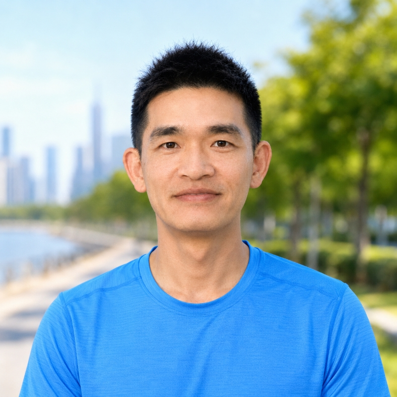

阳涌是英语语言文学硕士，拥有 16 年一线教学与课程改革经验，长期致力于语言、数学、思维与 AI 教育的深度融合，曾指导多名学生进入世界一流高校。自 2019 年起，他跟随王德生博士系统研修“三视角”“321 智慧”、SIO 及 SDE 本体论，形成以整体生成、差异推进、关系纠缠为核心的教育观。
Yang Yong holds an MA in English Language and Literature and brings sixteen years of frontline teaching and curriculum reform, with a sustained focus on the deep fusion of language, mathematics, thinking and AI in education; he has guided a number of students into world-class universities. Since 2019, as a student of Dr. Wang Desheng, he has systematically studied the Three-Perspective theory, the 321 wisdom, the SIO framework and SDE ontology, forming an educational outlook centered on holistic generation, difference-advancement and relational entanglement.
他现专注于生成式学习、数学底层结构、创新阅读与教育智能体研发，构建“AI + 创新教育”体系，推动知识在学科、生活与真实问题之间迁移、通融与创造。
He now focuses on generative learning, the underlying structure of mathematics, innovative reading, and the development of educational agents — building an “AI + innovative education” system that lets knowledge migrate, converge and create across disciplines, everyday life and real-world problems.
阳涌的研究横跨战争、消费、教育与科学哲学，但有一条统一的发生学关切：主体的能力与判断，是在什么条件下被生成，又在什么条件下被悄然废弛。在战争起源方向，他以自画像的征服、物化性收敛、确定性表演等命题，论证国家如何在理性与官僚问责的尽头走向战争，把冲突重解为一种主体生产与本体论安全的机制。
他最持续的关切是创造力与主体能力的退化。在数学创造力系列中，他提出认领困境、生成余数、判断性撑开等概念，论证效率逻辑与标准化评价如何在认知接缝处扼杀创造的发生；在消费批判中，他以体感贷、实践通道收窄揭示体验债务经济如何让日常生成能力代际衰减；在 AI 时代主体性方向，他以元气泄、不足认性、论证非平权等命题，重写主体能力在制度性保护下的退化。他还进入物理学哲学与人工智能的交界，讨论认知界面、分布式表征与认识论不透明性。贯穿其中的，是对必要的不确定性作为创造前提的一再守护。
他的方法把发生学的追问带入一个个看似不相干的领域，却总能逼出同一层机制：主体的能力不是被给定的，而是在具体条件下被生成或被废弛。从战争到课堂，他反复守护同一个价值——那种在效率与确定性的挤压下最先被牺牲、却恰恰是创造之根基的必要的不确定性。